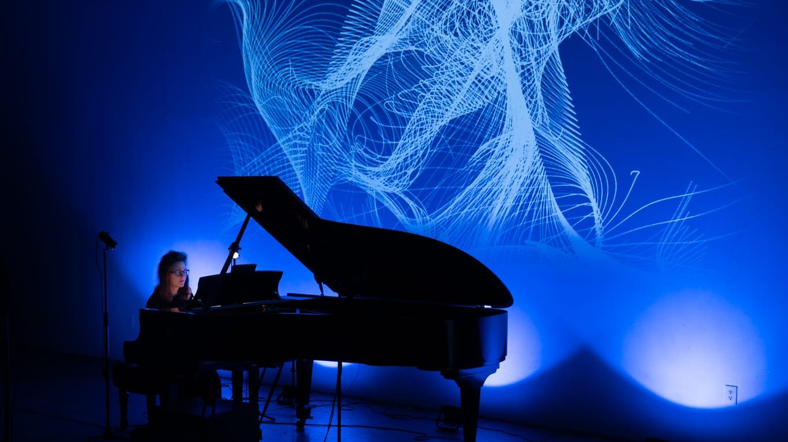

CreArtBox
Nueva York, desde 2013
Colectivo de música de cámara fundado con el flautista y compositor Guillermo Laporta. Repertorio y estrenos en producciones con artes visuales, proyección y escena.
Ver más



§ 02Proyectos
Un colectivo de música de cámara en Nueva York, un festival en la Asturias rural y un estudio de piano en Queens.
Nueva York, desde 2013
Colectivo de música de cámara fundado con el flautista y compositor Guillermo Laporta. Repertorio y estrenos en producciones con artes visuales, proyección y escena.
Ver más
Asturias, desde 2021
Festival internacional e itinerante que lleva música y arte contemporáneo a aldeas, iglesias, hórreos y paisajes del medio rural asturiano.
Ver más
Queens, Nueva York
Clases particulares en español o en inglés, talleres en comunidad y conciertos didácticos dentro del programa CreArtED.
Ver más§ 03Cómo trabajo
Buscar el equilibrio entre la precisión y la expresión: honrar cada detalle de la partitura y dejar al mismo tiempo que la música respire.
El gran repertorio y estrenos de compositores vivos, casi siempre en la misma velada.
Una iglesia, un hórreo, un claustro o una sala de ladrillo en Brooklyn: el programa se piensa para donde va a sonar.
Artistas pagados como es debido y entradas que no sean la razón por la que alguien se queda fuera.
Para contratación y giras, encargos a compositores o plazas en el estudio de piano, lo más rápido es el correo.
Escribir